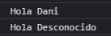

1.- Cortocircuito en (name = name || "Desconocido";)
En caso de que el llamado de la función no esté con parámetros defnidos mandar (Desconocido).
Usando:
function saludarV1(name) {
name = name || "Desconocido";
console.log('Hola', name);
}
saludarV1('Dani');
saludarV1();
